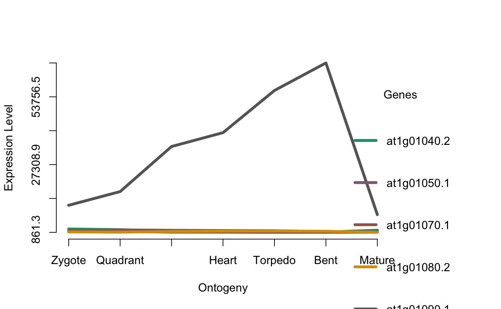

This function simply visualizes the gene expression profiles of
a defined subset of genes stored in the input ExpressionSet.
PlotGeneSet(
ExpressionSet,
gene.set,
get.subset = FALSE,
use.only.map = FALSE,
colors = NULL,
plot.legend = TRUE,
y.ticks = 6,
digits.ylab = 4,
...
)a standard PhyloExpressionSet or DivergenceExpressionSet object.
a character vector storing the gene ids for which gene expression profiles shall be visualized.
a logical value indicating whether or not an ExpressionSet subset of the selected gene.set should be retuned.
a logical value indicating whether instead of a standard ExpressionSet only a Phylostratigraphic Map or Divergene Map is passed to the function.
colors for gene expression profiles. Default: colors = NULL, hence default colours are used.
a logical value indicating whether gene ids should be printed as legend next to the plot.
a numeric value specifying the number of ticks to be drawn on the y-axis.
a numeric value specifying the number of digits shown for the expression levels on the y-axis.
additional parameters passed to matplot.
This function simply visualizes or subsets the gene expression levels of a set of genes
that are stored in the input ExpressionSet.
data(PhyloExpressionSetExample)
# the best parameter setting to visualize this plot:
# png("test_png.png",700,400)
PlotGeneSet(ExpressionSet = PhyloExpressionSetExample,
gene.set = PhyloExpressionSetExample[1:5, 2],
type = "l",
lty = 1,
lwd = 4,
xlab = "Ontogeny",
ylab = "Expression Level")

# dev.off()
# In case you would like to work with the expression levels
# of selected genes you can specify the 'get.subset' argument:
PlotGeneSet(ExpressionSet = PhyloExpressionSetExample,
gene.set = PhyloExpressionSetExample[1:5, 2],
get.subset = TRUE)
#> Phylostratum GeneID Zygote Quadrant Globular Heart Torpedo
#> 1 1 at1g01040.2 2173.635 1911.2001 1152.555 1291.4224 1000.253
#> 2 1 at1g01050.1 1501.014 1817.3086 1665.309 1564.7612 1496.321
#> 3 1 at1g01070.1 1212.793 1233.0023 939.200 929.6195 864.218
#> 4 1 at1g01080.2 1016.920 936.3837 1181.338 1329.4734 1392.643
#> 5 1 at1g01090.1 11424.567 16778.1685 34366.649 39775.6405 56231.569
#> Bent Mature
#> 1 962.9772 1696.4274
#> 2 1114.6435 1071.6555
#> 3 877.2060 894.8189
#> 4 1287.9746 861.2605
#> 5 66980.3673 7772.5617
# get a gene subset using only a phylostratihraphic map
ExamplePSMap <- PhyloExpressionSetExample[ , 1:2]
PlotGeneSet(ExpressionSet = ExamplePSMap,
gene.set = PhyloExpressionSetExample[1:5, 2],
get.subset = TRUE,
use.only.map = TRUE)
#> Phylostratum GeneID
#> 1 1 at1g01040.2
#> 2 1 at1g01050.1
#> 3 1 at1g01070.1
#> 4 1 at1g01080.2
#> 5 1 at1g01090.1